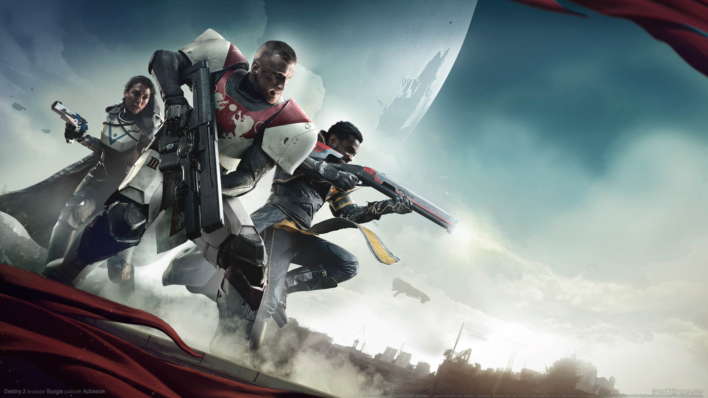

Destiny 2: Suuri seikkailu jos lompakossa riittää paine
Destiny 2 vie pelaajansa jälleen kerran uskomattomalle matkalle tähtien väliin, tarjoten syvällisen yhdistelmän ensimmäisen persoonan ammuntatoimintaa ja roolipelaamista. Vaikka peli ansaitsee ylistystä monipuolisesta pelattavuudestaan ja upeasta pelimaailmastaan, sen lisäosien hinta saattaa asettaa esteitä pelaajille.

Pelin ydinmekaniikka on vahva ja tyydyttävä, tarjoten monipuolisen valikoiman aseita ja kykyjä, jotka mahdollistavat pelaajilleen erilaisia taistelustrategioita. Lisäksi, Destiny 2 ylpeilee upeilla maisemillaan ja yksityiskohtaisilla alueillaan, jotka houkuttelevat pelaajia tutkimaan jokaisen nurkan ja kolkan.
Moninpeli on ehdottomasti pelin kohokohta, tarjoten pelaajilleen mahdollisuuden liittyä ystäviensä kanssa yhteistyöhön tai kilpailla toisiaan vastaan dynaamisissa pelimuodoissa. PvP-tilat tarjoavat jännitystä ja haastetta, kun taas PvE-sisältö tarjoaa syvällisen tarinankerronnan ja vaihtelevia tehtäviä.
Valitettavasti pelin lisäosien hinta saattaa olla este niille pelaajille, jotka haluaisivat kokea kaiken mitä Destiny 2 tarjoaa. Vaikka lisäosat tuovat mukanaan uusia alueita, tehtäviä ja aseita, niiden korkea hinta saattaa vaikuttaa pelaajien päätökseen ostaa ne.
Kokonaisuutena Destiny 2 on vaikuttava seikkailu, joka tarjoaa syvällisen ja monipuolisen pelikokemuksen kaikille FPS- ja RPG-faneille. Vaikka lisäosien hinta saattaa olla este, pelin ydinmekaniikka ja moninpelisisältö tekevät siitä ehdottomasti tutustumisen arvoisen.